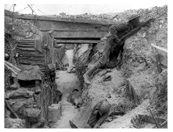
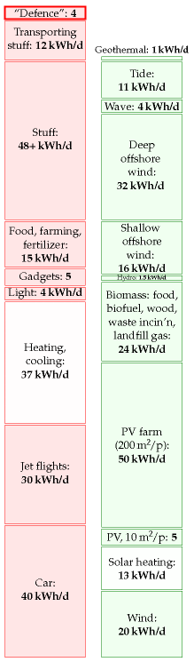
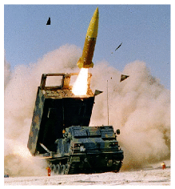
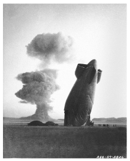

17 Public services

Every gun that is made, every warship launched, every rocket fired signifies, in the final sense, a theft from those who hunger and are not fed, those who are cold and are not clothed.
This world in arms is not spending money alone. It is spending the sweat of its laborers, the genius of its scientists, the hopes of its children.
President Dwight D. Eisenhower – April, 1953
The energy cost of “defence”
Let’s try to estimate how much energy we spend on our military.
In 2007–8, the fraction of British central government expenditure that went to defence was £33 billion/£587 billion = 6%. 1 If we include the UK’s spending on counter-terrorism and intelligence (£2.5 billion per year and rising), the total for defensive activities comes to £36 billion.
As a crude estimate we might guess that 6% of this £36 billion is spent on energy at a cost of 2.7p per kWh. (6% is the fraction of GDP that is spent on energy, and 2.7p is the average price of energy.) That works out to about 80 TWh per year of energy going into defence: making bullets, bombs, nuclear weapons; making devices for delivering bullets, bombs, and nuclear weapons; and roaring around keeping in trim for the next game of good-against-evil. In our favourite units, this corresponds to 4 kWh per day per person.
The cost of nuclear defence
The financial expenditure by the USA on manufacturing and deploying nuclear weapons from 1945 to 1996 was $5.5 trillion (in 1996 dollars). 2
Nuclear-weapons spending over this period exceeded the combined total federal spending for education; agriculture; training, employment, and social services; natural resources and the environment; general science, space, and technology; community and regional development (including disaster relief); law enforcement; and energy production and regulation.
If again we assume that 6% of this expenditure went to energy at a cost of 5¢ per kWh, we find that the energy cost of having nuclear weapons was 26 000 kWh per American, or 1.4 kWh per day per American (shared among 250 million Americans over 51 years).
What energy would have been delivered to the lucky recipients, had all those nuclear weapons been used? The energies of the biggest thermonuclear weapons developed by the USA and USSR are measured in megatons of TNT. A ton of TNT is 1200 kWh. The bomb that destroyed Hiroshima had the energy of 15 000 tons of TNT (18 million kWh). A megaton bomb delivers an energy of 1.2 billion kWh. If dropped on a city of one million, a megaton bomb makes an energy donation of 1200 kWh per person, equivalent to 120 litres of petrol per person. The total energy of the USA’s nuclear arsenal today is 2400 megatons, contained in 10 000 warheads. In the good old days when folks really took defence seriously, the arsenal’s energy was 20 000 megatons. These bombs, if used, would have delivered an energy of about 100 000 kWh per American. That’s equivalent to 7 kWh per day per person for a duration of 40 years – similar to all the electrical energy supplied to America by nuclear power.

Figure 17.1. The energy cost of defence in the UK is estimated to be about 4 kWh per day per person.
Energy cost of making nuclear materials for bombs
The main nuclear materials are plutonium, of which the USA has produced 104 t, and high-enriched uranium (HEU), of which the USA has produced 994 t. Manufacturing these materials requires energy.
The most efficient plutonium-production facilities use 24 000 kWh of heat when producing 1 gram of plutonium. 3 So the direct energy-cost of making the USA’s 104 tons of plutonium (1945–1996) was at least 2.5 trillion kWh which is 0.5 kWh per day per person (if shared between 250 million Americans).
The main energy-cost in manufacturing HEU is the cost of enrichment. Work is required to separate the 235U and 238U atoms in natural uranium in order to create a final product that is richer in 235U. The USA’s production of 994 tons of highly-enriched uranium (the USA’s total, 1945–1996) had an energy cost of about 0.1 kWh per day per person. 4
“Trident creates jobs.” Well, so does relining our schools with asbestos, but that doesn’t mean we should do it!
Marcus Brigstocke
Universities
According to Times Higher Education Supplement (30 March 2007), UK universities use 5.2 billion kWh per year. Shared out among the whole population, that’s a power of 0.24 kWh per day per person.
So higher education and research seem to have a much lower energy cost than defensive war-gaming.
There may be other energy-consuming public services we could talk about, but at this point I’d like to wrap up our race between the red and green stacks.
Notes and further reading


military energy budget. The UK budget can be found at [yttg7p]; defence gets £33.4 billion [fcqfw] and intelligence and counter-terrorism £2.5 billion per year [2e4fcs]. According to p14 of the Government’s Expenditure Plans 2007/08 [33x5kc], the “total resource budget” of the Department of Defence is a bigger sum, £39 billion, of which £33.5 billion goes for “provision of defence capability” and £6 billion for armed forces pay and pensions and war pensions. A breakdown of this budget can be found here: [35ab2c]. See also [yg5fsj], [yfgjna], and www.conscienceonline.org.uk. The US military’s energy consumption is published: “The Department of Defense is the largest single consumer of energy in the United States. In 2006, it spent $13.6 billion to buy 110 million barrels of petroleum fuel [roughly 190 billion kWh] and 3.8 billion kWh of electricity” (Dept. of Defense, 2008). This figure describes the direct use of fuel and electricity and doesn’t include the embodied energy in the military’s toys. Dividing by the US population of 300 million, it comes to 1.7 kWh/d per person.↩︎
The financial expenditure by the USA on manufacturing and deploying nuclear weapons from 1945 to 1996 was $5.5 trillion (in 1996 dollars). Source: Schwartz (1998).↩︎
The USA’s production of 994 tons of HEU… Material enriched to between 4% and 5% 235U is called low-enriched uranium (LEU). 90%-enriched uranium is called high-enriched uranium (HEU). It takes three times as much work to enrich uranium from its natural state to 5% LEU as it does to enrich LEU to 90% HEU. The nuclear power industry measures these energy requirements in a unit called the separative work unit (SWU). To produce a kilogram of 235U as HEU takes 232 SWU. To make 1 kg of 235U as LEU (in 22.7 kg of LEU) takes about 151 SWU. In both cases one starts from natural uranium (0.71% 235U) and discards depleted uranium containing 0.25% 235U. The commercial nuclear fuel market values an SWU at about $100. It takes about 100 000 SWU of enriched uranium to fuel a typical 1000 MW commercial nuclear reactor for a year. Two uranium enrichment methods are currently in commercial use: gaseous diffusion and gas centrifuge. The gaseous diffusion process consumes about 2500 kWh per SWU, while modern gas centrifuge plants require only about 50 kWh per SWU. [yh45h8], [t2948], [2ywzee]. A modern centrifuge produces about 3 SWU per year. The USA’s production of 994 tons of highly-enriched uranium (the USA’s total, 1945–1996) cost 230 million SWU, which works out to 0.1 kWh/d per person (assuming 250 million Americans, and using 2500 kWh/SWU as the cost of diffusion enrichment).↩︎